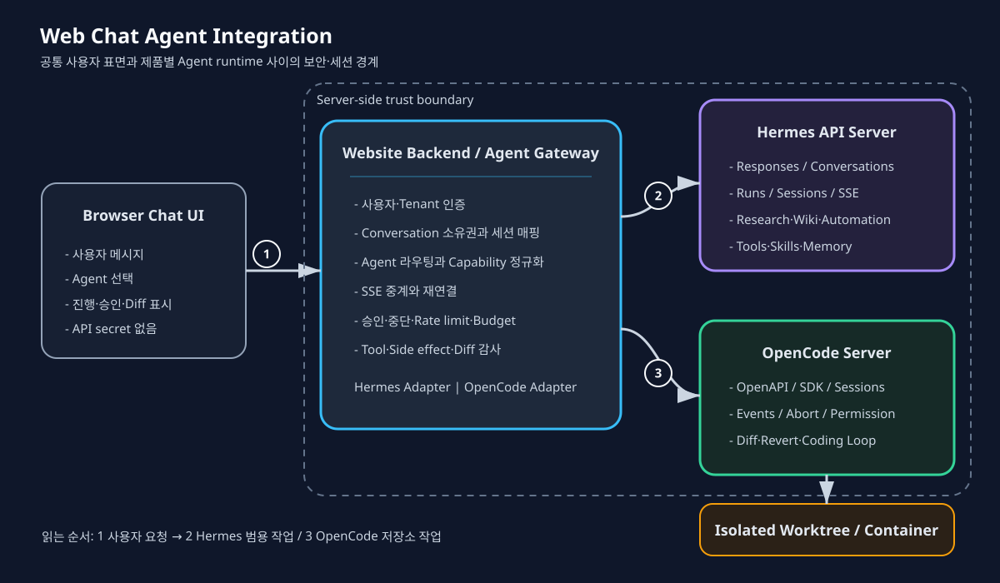

웹 채팅 UI 기반 Agent 통합 아키텍처
한눈에 보기
웹사이트에서 Hermes와 OpenCode를 대화형 Agent로 제공할 수 있다. 권장 구조는 브라우저가 Agent 서버에 직접 접속하는 방식이 아니라, 웹사이트 백엔드가 인증·세션·정책·승인·스트리밍을 통제하고 제품별 API 차이를 어댑터로 흡수하는 구조다.

그림 1. 왼쪽에서 오른쪽으로 읽는다. 브라우저는 하나의 공통 채팅 계약만 사용한다. Website Backend / Agent Gateway가 사용자와 대화의 소유권을 검증한 뒤 Research 작업은 Hermes, 저장소 중심 Coding 작업은 OpenCode로 전달한다. Agent 서버의 credential과 로컬 파일 권한은 브라우저에 노출하지 않는다. 이 구조는 identity-permissions-and-secrets의 주체 분리, human-in-the-loop의 위험 기반 승인, multi-agent-orchestration의 책임 경계를 웹 채팅이라는 사용자 접점에 적용한 것이다.요구사항과 경계
웹 채팅 통합은 단순히 Prompt를 HTTP로 전달하는 문제가 아니다. 최소한 다음 계약이 필요하다.
- 사용자와 tenant를 인증한다.
- 웹사이트 대화 ID와 Agent 세션 ID의 소유권을 연결한다.
- 답변 token뿐 아니라 Tool 실행, 완료, 오류, 승인 요청을 실시간 표시한다.
- 새로고침과 일시적 연결 단절 뒤에도 작업 상태를 복구한다.
- 사용자가 실행 중인 작업을 중단할 수 있다.
- 파일 수정·Shell·배포 같은 행동은 권한과 위험 수준에 따라 승인한다.
- Agent별 API와 event 형식의 차이를 프런트엔드에서 숨긴다. 비요구사항도 명확히 해야 한다. 웹 채팅 UI가 Agent의 보안 경계가 되어서는 안 된다. 버튼을 숨기거나 System Prompt에 금지 문구를 넣는 것은 OS·API·Gateway 권한 통제를 대체하지 못한다. 실제 실행 경계는 permissioning-and-least-privilege와 code-execution-and-sandboxing에 따라 서버 측에서 강제한다.
권장 참조 아키텍처
Browser Chat UI
│ HTTPS: common messages/events
▼
Website Backend / Agent Gateway
├─ authentication / tenant isolation
├─ conversation ownership / session mapping
├─ routing / rate limit / budget
├─ approval / cancellation / audit
├─ Hermes Adapter ──► Hermes API Server
└─ OpenCode Adapter ─► OpenCode Server ─► isolated repository workspaceBrowser Chat UI
브라우저는 사용자 메시지, Agent 선택, 대화 ID만 백엔드에 전송한다. API key, OpenCode server password, 로컬 경로와 service credential은 받지 않는다. 출력은 text delta와 다음 상태 이벤트를 구분해 렌더링한다.
message.delta
tool.started
tool.completed
approval.required
run.completed
run.failedWebsite Backend / Agent Gateway
Gateway는 다음 책임을 가진다.
- 로그인 세션을 내부
user_id와tenant_id로 해석한다. website_conversation_id가 현재 사용자 소유인지 확인한다.- 요청 목적이나 명시적 선택에 따라 Hermes/OpenCode adapter로 라우팅한다.
- Agent별 native event를 공통 event schema로 정규화한다.
- 승인 대상의 action·arguments·target·risk를 고정하고 승인 후 변경되지 않았는지 확인한다.
- timeout, cancel, retry와 중복 실행을 추적한다.
- run, tool call, side effect, diff와 승인자를 감사 로그에 연결한다.
Agent Adapter
공통 프런트엔드 계약과 각 Agent의 native API 사이를 변환한다. 기능의 최소 공통분모만 강제하기보다 capability discovery로 지원 기능을 노출하는 편이 낫다. 예를 들어 Hermes의 장기 Run과 OpenCode의 repository diff는 공통 metadata로 보존하되 제품 고유 기능을 버리지 않는다.
공통 API 계약 예시
POST /api/agent-conversations
POST /api/agent-conversations/{id}/messages
GET /api/agent-runs/{run_id}/events
POST /api/agent-runs/{run_id}/stop
POST /api/agent-runs/{run_id}/approvals/{approval_id}
GET /api/agent-conversations/{id}/messages메시지 요청은 Agent와 작업 범위를 명시한다.
{
"agent": "opencode",
"conversationId": "chat-1024",
"message": "실패하는 테스트를 재현하고 최소 수정으로 해결해줘",
"workspaceId": "repo-17"
}데이터베이스에는 최소한 다음 관계를 유지한다.
website_conversation_id
owner_user_id
tenant_id
agent_type
native_session_id
workspace_id
active_run_id
created_at
last_active_atnative_session_id를 브라우저가 임의로 지정하게 해서는 안 된다. Gateway가 소유권을 확인한 뒤 내부에서 조회해야 다른 사용자의 세션 탈취를 막을 수 있다.
Hermes 연결
Hermes API Server는 OpenAI-compatible HTTP endpoint를 제공하고, Agent가 서버 측에서 Tool을 실행한 뒤 최종 응답을 반환한다.Hermes API Server
대화와 상태
POST /v1/chat/completions: OpenAI Chat Completions 호환, 전체 대화가 요청에 포함되는 stateless 방식POST /v1/responses:previous_response_id또는 namedconversation으로 Tool 기록을 포함한 서버 측 대화 상태 유지/api/sessions/*: 세션 생성·조회·메시지·fork와 단일 Agent turn 제어 웹사이트 대화에는/v1/responses의 named conversation 또는 Hermes session을 대응시키는 것이 적합하다. 클라이언트가 전체 Tool transcript를 매 요청마다 재전송하지 않아도 되고, 후속 질문이 같은 Hermes 세션에 쌓인다.
장기 실행과 스트리밍
Hermes의 /v1/runs는 run ID를 반환하며, /v1/runs/{run_id}/events에서 token delta, Tool 진행, lifecycle과 하위 Agent lifecycle을 SSE로 제공한다. 상태 polling, stop, approval endpoint도 제공하므로 연결이 끊길 수 있는 장기 작업 UI에 적합하다.Hermes API Server
짧은 일반 대화는 /v1/responses streaming으로 단순화하고, 장시간 조사·파일 작업·승인이 필요한 작업은 Runs API로 처리하는 이중 전략이 실용적이다.
Dashboard와 자체 UI의 차이
hermes dashboard의 Chat tab은 실제 Hermes TUI를 PTY/WebSocket으로 브라우저에 렌더링하며 Tool card, slash command와 승인 Prompt를 지원한다.Hermes Web Dashboard 내부 운영과 빠른 검증에는 유용하지만, 기존 웹사이트의 로그인·디자인·사용자별 제품 권한에 통합할 때는 API Server 앞에 자체 Gateway를 두는 편이 명확하다.
OpenCode 연결
OpenCode는 opencode serve로 headless HTTP server를 실행하며 OpenAPI 3.1 spec과 programmatic API를 제공한다. 기본 listen 주소는 127.0.0.1, 기본 port는 4096이고 OPENCODE_SERVER_PASSWORD로 HTTP Basic Auth를 적용할 수 있다.OpenCode Server
OPENCODE_SERVER_USERNAME=opencode \
OPENCODE_SERVER_PASSWORD='<server-secret>' \
opencode serve --hostname 127.0.0.1 --port 4096SDK와 세션
공식 JS/TS SDK는 @opencode-ai/sdk이며, 기존 서버에는 createOpencodeClient로 연결한다.OpenCode SDK
import { createOpencodeClient } from "@opencode-ai/sdk"
const client = createOpencodeClient({
baseUrl: "http://127.0.0.1:4096",
})OpenCode session API는 세션 생성·목록·메시지·fork·abort·diff·revert·permission 응답을 제공한다. 웹사이트 대화 하나를 OpenCode session 하나에 연결하고, 별도의 workspace_id로 허용된 저장소와 worktree를 고정한다.
이벤트와 코드 작업
GET /global/event는 SSE event stream을 제공한다. Gateway는 session과 message 관련 event만 해당 사용자에게 필터링하고 다음 공통 상태로 변환한다.OpenCode Server
파일 검색 중 → tool.started
Patch 적용 완료 → tool.completed
권한 요청 → approval.required
Session idle/completed → run.completedOpenCode는 session diff와 revert 같은 저장소 중심 기능이 강점이다. 따라서 결과 메시지만 보여주지 말고 변경 파일, diff, test result와 승인할 외부 부작용을 별도 UI component로 제공하는 것이 좋다. 이는 coding-agent-reference-architecture의 Workspace·Verifier·VCS Adapter 경계를 사용자 화면까지 연결한다.
Hermes와 OpenCode 비교
| 항목 | Hermes Agent | OpenCode Agent |
|---|---|---|
| 주 용도 | 범용 업무, 조사, Wiki, 자동화와 Tool 실행 | 저장소 탐색, 코드 수정, 테스트와 개발 작업 |
| API | OpenAI 호환 API + Hermes-native Runs/Sessions API | OpenCode 전용 OpenAPI 3.1 |
| 대화 유지 | Responses chain, named conversation, Hermes session | OpenCode session |
| 실시간 진행 | Responses SSE, Runs event SSE | Global event SSE |
| 중단 | Run stop | Session abort |
| 승인 | Run approval | Session permission response |
| 변경 관리 | 범용 파일·Tool artifact | Session diff, revert, workspace 중심 |
| 장기 지식 | Hermes skills와 persistent memory | 프로젝트 rules, agents와 session context |
| 자동화 | Cron, webhook과 gateway 플랫폼 | 외부 scheduler/orchestrator가 담당 |
| 웹 통합 | OpenAI-compatible client 또는 native API | OpenCode SDK/API adapter 필요 |
| 두 API를 같은 endpoint처럼 가장하지 않는 것이 중요하다. 프런트엔드 계약은 공통화하되, Gateway 내부에서는 기능과 lifecycle이 다른 별도 adapter로 유지한다. |
운영 패턴
패턴 A: 사용자가 Agent를 직접 선택
Research Agent → Hermes
Coding Agent → OpenCode장점은 실행 주체와 권한이 명시적이라는 점이다. 개발자가 저장소와 model/agent를 직접 선택해야 하는 내부 개발 포털에 적합하다. 단점은 사용자가 두 Agent의 역할과 한계를 이해해야 하고, 한 대화에서 조사와 구현을 연결할 때 context handoff를 설계해야 한다는 것이다.
패턴 B: Hermes Orchestrator가 OpenCode Worker에 위임
User → Hermes Orchestrator → OpenCode Coding Worker사용자는 하나의 대화만 사용하고 Hermes가 조사·계획·설명을 담당하며 코드 작업만 OpenCode에 위임한다. 일반 사용자에게 단순하지만, 위임 계약에 repository, base revision, objective, success criteria, tool scope, budget과 expected artifacts를 명시해야 한다. OpenCode의 결과는 “완료”라는 자연어가 아니라 diff·test result·child session ID로 검증한다. 이 패턴은 multi-agent-orchestration의 TaskEnvelope와 WorkerResult 계약을 적용한다.
보안과 격리
- 직접 노출 금지: Browser JavaScript에
API_SERVER_KEY나OPENCODE_SERVER_PASSWORD를 넣지 않는다. - Loopback 기본값: Agent 서버는 웹 백엔드와 같은 host라면
127.0.0.1에 bind한다. 원격 배치라면 private network, TLS와 service identity를 적용한다. - 세션 소유권: 모든 native session 조회·message·stop·approval 전에
(tenant_id, user_id, website_conversation_id)매핑을 검사한다. - 작업공간 allowlist: 사용자가 임의의 절대 경로를 전달하지 못하게 하고 server-side workspace registry에서 저장소를 선택한다.
- 격리: 사용자 또는 작업별 worktree/container를 사용하고 host home, SSH key, cloud credential을 기본 차단한다.
- 권한 분리: 읽기·검색과 파일 수정, package install, network, commit, push, deploy 권한을 분리한다.
- 승인 무결성: 승인 화면에 action, target, arguments와 diff hash를 표시하고 승인 이후 값이 바뀌면 재승인한다.
- 출력 통제: Tool output의 secret redaction과 tenant별 log 분리를 적용한다.
- Prompt Injection: 웹·문서·코드 주석은 명령이 아니라 비신뢰 데이터로 처리한다. 자세한 위협은 prompt-injection-and-tool-security를 따른다.
신뢰성과 운영
- SSE 재연결: event ID 또는 run status polling으로 누락 이벤트를 복구한다.
- Idempotency: 메시지 전송과 고위험 action에 client request ID를 부여해 재연결 시 중복 실행을 막는다.
- Cancellation: UI에서 “중단 요청됨”과 실제 executor 종료를 구분한다.
- Timeout: HTTP 연결 timeout과 Agent 작업 deadline을 분리한다.
- Backpressure: 동시 run 수, 사용자별 queue, token·시간·Tool budget을 제한한다.
- Audit: user → conversation → run → agent session → tool → side effect → approval 계층을 trace한다.
- 관측 지표: 첫 token 시간, 전체 완료 시간, Tool 오류율, 승인 대기, 취소 성공, 중복 실행, diff rejection과 비용을 기록한다. 실패와 복구는 checkpointing-retry-and-recovery, 중복 부작용은 idempotency-and-side-effect-control, 운영 지표는 agent-slo-and-operational-metrics를 따른다.
단계적 도입
- 내부 PoC: Hermes Dashboard와 OpenCode server를 각각 로컬에서 검증한다.
- 공통 Gateway: text message, session mapping, SSE와 stop만 구현한다.
- Read-only: Wiki 조회와 repository 분석만 허용하고 쓰기 Tool을 차단한다.
- Isolated write: task별 worktree에서 파일 수정과 테스트를 허용하되 외부 VCS action은 차단한다.
- Approval-based VCS: diff와 test evidence를 보여준 뒤 commit/PR만 승인 실행한다.
- Limited automation: 평가셋과 운영 지표가 기준을 만족한 작업 유형에만 자동 승인 범위를 좁게 부여한다. 초기 기본값은 단순해야 한다. 일반 질문·리서치·Wiki는 Hermes, 저장소 수준 수정·테스트는 OpenCode로 라우팅하고, 실제 사용 데이터에서 교차 작업이 충분히 확인된 뒤 Orchestrator 패턴을 도입한다.
Kubernetes 배포
클러스터 배포에서는 Website Backend는 stateless Deployment로 수평 확장하되 Agent runtime은 상태와 workspace를 기준으로 분리한다. Hermes는 profile/shard별 StatefulSet과 독립 PVC를 사용하고 동일 conversation을 같은 shard로 라우팅한다. OpenCode는 대화형 workspace별 Pod 또는 bounded task별 Kubernetes Job을 사용하며 writable Git workspace를 여러 Pod가 공유하지 않는다.
- hermes-kubernetes-deployment-architecture —
/opt/data, Responses conversation과 profile shard를 보존하는 StatefulSet 설계 - opencode-kubernetes-deployment-architecture — session state, repository workspace, Job worker와 coding sandbox 설계
관련 페이지
- coding-agents
- coding-agent-reference-architecture
- multi-agent-orchestration
- identity-permissions-and-secrets
- human-in-the-loop
- permissioning-and-least-privilege
- observability-and-tracing